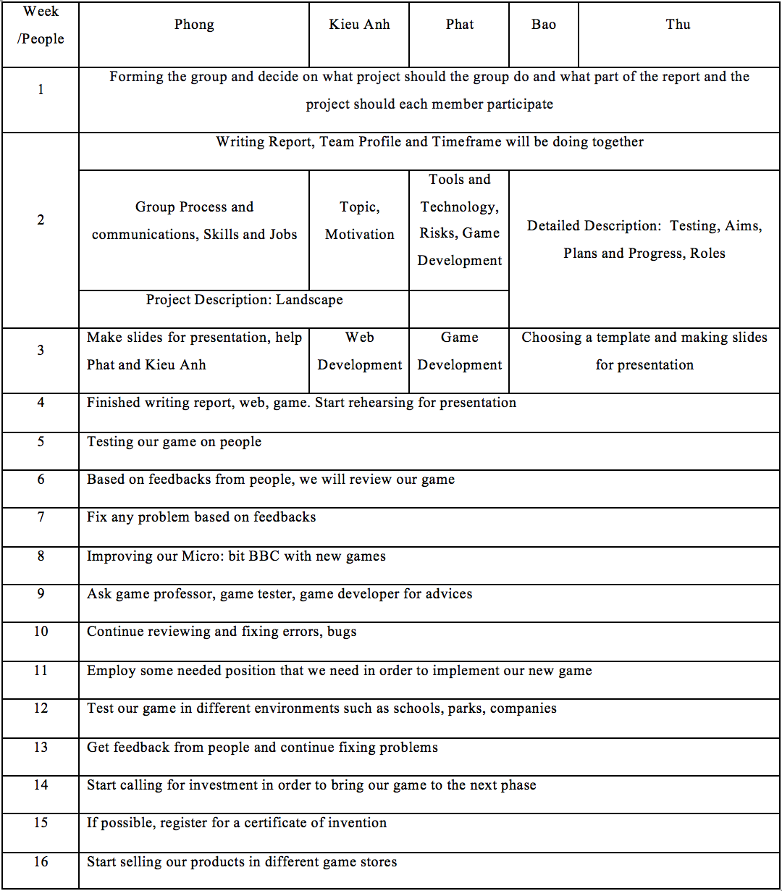

Demonstating our processes with details.
There were punches of
risk during the time we made the project. The first thing is except for members
who have experience with micro bits, the whole team has to research a lot in
order to know how micro bits work and what else can it do in order to improve
the final product. Luckily Microbit make code which is the tool we use to
create code for the game can change from Python to java and vice versa so there
not much difficult in coding the only problem was our skill in Python and Java
is not actually great, so it took a long time to finish it. There were also
have some problems with the tool such as sometimes it cannot convert Java to
Python because the convert program of the tool has problem. We still can change
Java to Python but there will appear bugs in Python code which prevent us to
convert the code again since the precise of the code is compulsory when we want
to convert into another language. Another big problem is downloading the code
to the micro bits because it usually lost connection however, we had fixed it
by replacing the cable, the same problem with the speaker we have to buy a
suitable cable to concert with the speaker. After two days using the micro
bits, we found out that one of the LEDs was broken and that what we thought at
first luckily it was not. The reason that LED did not work was the coding. We
program for the bullet shooting because the spaceship cannot reach the top left
of the micro bit it took us a day to find out, we intend to borrow another
micro bit.
Communication
between members is one of the most important elements within the work of a
team. Good communication will make an effectiveness and a drive to the desired
target for the entire team. Because no one is the same, proposals can come into
a discussion regarding the desired purpose of the team. Sometimes, we meet in
areas outside of the school like a random café in District 1 in order to create
comfort and motivation for the whole team. And because some of us have classes
and plans, usually we meet on the weekends. We could address our project and
our activities very well in those moments. We also gathered ourselves in the
school campus after lecture and tutorial classes to discuss and decide what
topic or what project we will be doing. For instance, at first, everyone had
different ideas for this project, Kieu Anh got an idea for a data lake, Phong
had an idea for a shopping online application, and Bao had an idea for a VPN
application. But overall, we ended up with the idea of a Micro Bit which was
found by Phat. The reason why we choose this idea because Kieu Anh’s idea was
quite complicated to implement due to lack of knowledge, Phong’s project is kind
of similar to the existed shopping application since there is only one
out-standing feature, and Bao’s idea could be the most difficult one to do
because it requires many software skills.
Furthermore, we also set a team
deadline and divide tasks and for each member for this project: Phong and Phat
are mainly in charge of game development, Kieu Anh is responsible for the web
development, Bao and Thu mainly write the report. But it is not only that a
member only does their given task but everyone in the team also contributes and
helps others if needed.
We
communicate through face-to-face and virtual environments, i.e., the internet.
We wouldn't just meet at a café, we would chat through other virtual resources
such as Messenger, Discord or just email or use Facebook. This is to avoid that
a person is busy and not able to attend a group meeting.
created with
Website Design Software .